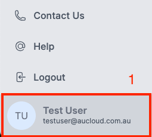
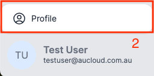
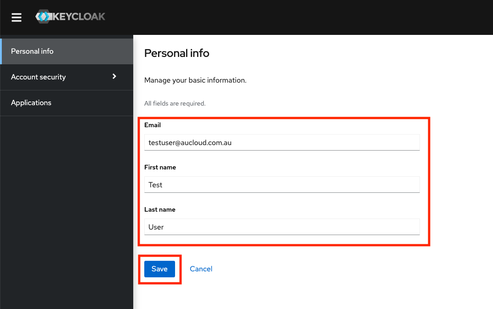
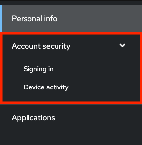
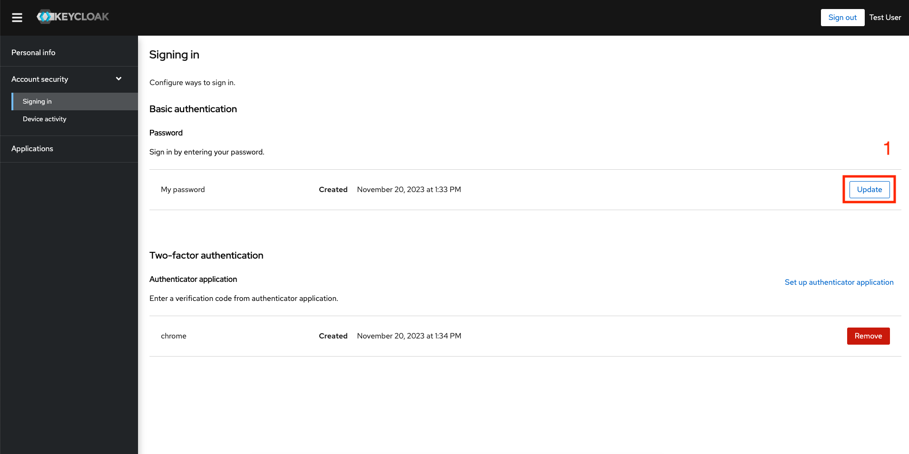
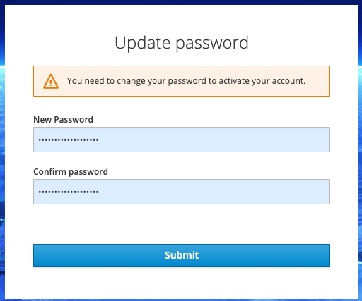
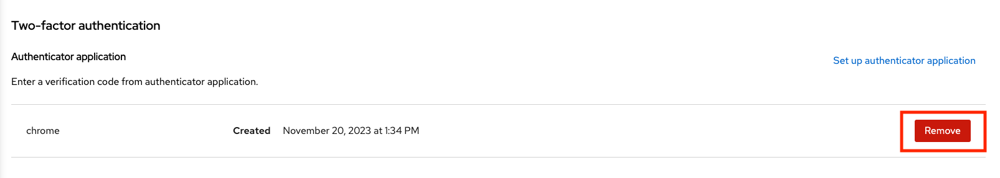
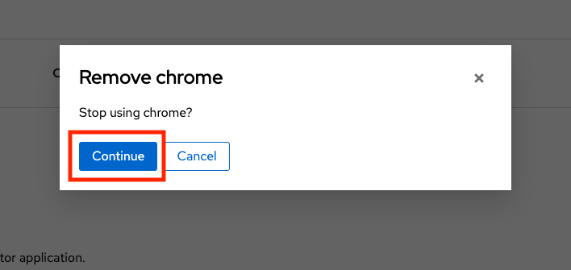
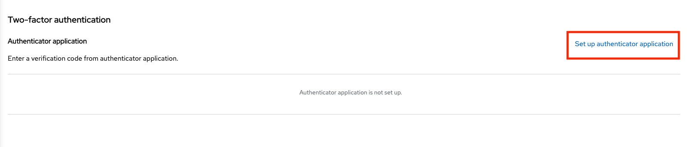
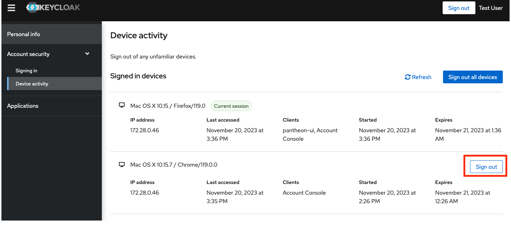

Portal Account Self Management
Overview¤
This guide will detail how to manage and change a user's own details after logging into the new Portal.
Getting to Account Management¤
-
After logging in to your Portal account, click your user name in the bottom left.

-
Click the Profile button that pops up above the user name area.

-
A new tab will open that will navigate to the Account Management page.
Personal info¤
On the Personal info tab, you can change your First and Last names. Please note that at this time, changing your Email is not supported and will not work. Enter the information as needed and press Save.

Account Security¤
Account security has two sub-pages: Signing in and Device activity.

Signing in page¤
The Signing in page allows you to change your password and setup and remove applications for two-factor authentication.
Updating your password¤
To change password:
-
Click Update in the Password section of the page.

-
The browser will redirect to a page asking you to re-authenticate. Please follow the same login flow as outlined here from step 3.
-
The browser will redirect to a page where you can enter your new password. Please type it again in the confirm password box, then click Submit.

Resetting two-factor authentication¤
To remove an existing two-factor authentication application:
-
Click the relevant Remove button in the Two-factor authentication section of the page on the same line as the application you want to remove:

-
A confirmation dialog will pop up. Click Continue.

To set up a new two-factor authentication application:
-
Click the Set up authenticator application button.

-
The browser will redirect to a page asking you to re-authenticate. Please follow the same flow as outlined here from steps 5 to 8.
Device activity page¤
The device activity page allows you to view all devices which are currently logged in with your user. You can sign out of sessions other than the current session using the Sign out button against the relevant session.

Applications¤
The applications tab currently has no use for the end user.